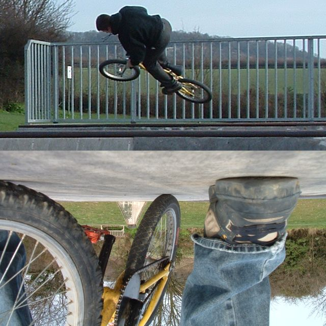

skids
don't tell my mum or sensbile people, but it's fun to try
skids on the ice in your car. all safe mind you, just apply the breaks gently
when you are on a quiet empty road and feel the car gliding.
went digging in the snow. it's pretty hard to hit the jumps in at the moment.
this might sound strange, but digging is fun! i guess that's just compared to
this job. simon said he wants to move to bournmouth. if you ask me he'd be crazy
to move away from wisley.- January 30,
2004 8:20 am
ring

Here is a picture of my ivy ring that we made; the real ring is getting made
this week so maybe next week I can put a picture of that one on.
- January 29, 2004 2:25 pm
snowball fights are fun

it snowed properly this evening. i went outside and taught the local 'hood kids
how to fight in the snow properly. they stand there and throw with terrible aim.
i just ran at them and stuffed it down their backs. they soon got the the tip
and fought like troopers. there was one little girl just throwing snow at
everyone, but if someone hit her she started cry. i am tired.
- January 28, 2004 8:07 pm
snow.

this is a picture from
brookfield trails. those jumps are really nice but they never got ridden i
think.
so anyway it snowed today in most places i think. we only get a bit down here
in kent and it's all gone now.
i work in the depot where they run the gritters from so i get constant
updates on the current forecasts and stuff. we are expecting more snow later
today and tonight but it changes all the time.
the jumps were still there yesterday when tim went to look. went to the park
again last night despite the wetness. it was still ok to ride a few bits here
and there. the box is very hard to clear though.
- January 28, 2004 12:50 pm
dry.
this "cold spell" is good for the parks. it's just light
enough to go and ride after school/work so take your bike with you and get down
to the park. it's meant to snow tomorrow anyway so make the most of it. then
soon it's februrary and from there the warm weather comes thick and fast.
summers not looking too far off. now i just need to work out a way of having 6
weeks off.
- January 27, 2004 2:27 pm
bad trails news
got to the trails to dig last night and discovered
that the spades have been nicked. someone's been down there cutting down some
trees too. fortunatly the jumps are untouched but it made me really worried
about them. i rung the land owner and he said it's still ok for us to be there,
but i know that the farmer in the next door field won't care about that and will
still try to knock the jumps down. i made a sign anyway.
went to whatman park yesterday afternoon and rode for about 10 minutes until
my chain snapped. i really need to build my pantera up. someone buy my cruiser -
it's very good, perfect for a cross over between mtb and bmx.
- January 27, 2004 8:07 am
saturday
 on
saturday went to the jumps, picked up the rubbish and asked the wife to be my
real wife. then went and bought a ring and picked up my camera. then went to
burham which was very wet. pictures
here taken by "the wife". this is the caption, so there's no writing. then
went to watman which wasn't so wet but still slippery. no pictures.
i remade seb's site
so it's good.
- January 25, 2004 6:19 pm
Bull Shark Update
Bull sharks are the only type of shark that can live in both
salt and fresh water. As a result they are found in lakes and rivers as well as
the sea. In fact, they are perhaps the most feared of sharks and are very
dangerous. Here is a picture of a man cuddling a bull shark. I think he is a
bit dim. Or at least, not technically minded anyway.

Here is some more information:The bull shark has a short snout
that is wider than it is long (hence its name). Its belly is off-white, its top
surface is grey, and the eyes are small. The first dorsal fin is much longer and
more pointed than the second dorsal fin. A pup's fins have black tips, but these
markings fade in the adults. The females are larger than the males as is often
the case with sharks. The bull shark is also know as the cub, Ganges, Nicaragua,
river, Swan River Whaler, Zambezi, shovelnose, slipway grey, square-nose, and
Van Rooyen's shark.

Below is a picture of a Bull Shark considering eating a man.
After tasting him, I think he decided he was a bit tough. Younger humans are
more tender.

- January 23, 2004 11:16 am
the white stripes
went to see the white stripes last night. they were very
good. seb has some pictures so they might appear on here in the next day or so.
will it ever stop raining?
- January 21, 2004 12:23 pm
holiday snaps
new links
pages
the real guestbook
- January 16, 2004 11:01 am
sidley woods

so work is useful sometimes. i say that sidley was on this bus route which i was
changing. hold on, sidley, there's trails there. so i looked at the route and
now i think i have a fairly good idea where they are.
- January 13, 2004 12:54 pm
just a couple of links
adams new
site
stolen from forest of dean bmx
- January 12, 2004 7:36 pm
ill
tim had his operation yesterday. i went to see him after
he woke up but he looked very pale and felt sick and tired. he was still with it
though. he comes back tomorrow, so email him to cheer him up:
timdwyeratbigfootdotcom
adam has a new skating site which looks cool. i'll give you the links later.
- January 12, 2004 2:04 pm
People tend to copy our news and put it on their site. We don't like that style.
At THISISNOTASKATEBOARD we communicate directly to the pros to give you the
latest gossip, rumours and news. We will throw some lies in there as well
because our news page is called: Believe it, or not?! so when people blindly
copy it, we're laughing...
- January 10, 2004 8:57 pm
new car
 this
is my new car. a nice green rover. hopefully it will match my new bike if it
ever comes. the stereo is really nice but i can't get it to work. this
is my new car. a nice green rover. hopefully it will match my new bike if it
ever comes. the stereo is really nice but i can't get it to work.
tim goes in for his operation tomorrow morning. he's not allowed to eat or
DRINK starting from tonight.
- January 10, 2004 8:47 pm
broken: camera, car, speed limit, arm
 ouch
ouch ouch. tim broke his arm. he came off on the spine mini and snapped his
radius in two. i saw the x-ray and it looked so painful. he has to go back
tomorrow for an operation to put a metal plate in his arm. ouch
ouch ouch. tim broke his arm. he came off on the spine mini and snapped his
radius in two. i saw the x-ray and it looked so painful. he has to go back
tomorrow for an operation to put a metal plate in his arm.
again, this picture is not of tim's arm, but it looks quite similer to his
x-ray. i wish you could do a print screen from your eyes.
- January 10, 2004 9:13 am
DISASTER!by
rebekah
Big News Update:
Tim has fallen off his bike and he and Ben are in casualty as I speak. They
think he has dislocated his wrist. This is very bad. Here is a picture of a
casualty. They have gone to Sittingbourne Casualty which this is not, but they
are all quite the same really.

Tim may look like this:

And Ben may look like this:

More news as it arrives.
No, seriously, this does suck for Tim quite a lot. Hope
you feel better soon.
- January 9, 2004 11:40 pm
uglyometer
 went
to playstation last night with skateboarding pal adam. i met simon hall there
and he was doing some crazy transfers. vert wall to bigger roll in, and spine to
flatbank over BOTH rails. went
to playstation last night with skateboarding pal adam. i met simon hall there
and he was doing some crazy transfers. vert wall to bigger roll in, and spine to
flatbank over BOTH rails.
i don't like the box there becasue it's too hard to clear, but i practiced
some tricks. i did a few other things like quarter to flat bank transfer, but i
was riding badly. maybe i was tired?
on the way back i missed the train by about 10 seconds so had 1/2 hour to
kill, so i visited southbank. it was dry, lit and free. maybe go there next
time.
i had the day off to look for cars. i must have rung up about 20 people but a
lot of them weren't in. we went to see one car this afternoon, but there was too
much wrong with it for it to be worth £400. looking at some more tomorrow.
the other day we invented a new game. on the back of the door on in our study
are 3 lord of the rings posters. at the top is arwen, second is aragorn and at
the bottom is an orc. then on either side are a list of famous people, boys on
one side girls on the other. the least ugly ones at the top the foul ones at the
bottom. at the bottom at the moment is pop idol michelle. she was on blue peter
a minuite ago. they showed lots of big michelle fans. i'm a fan of big michelle.
outkast is on the radio. i just went into the kitchen and went huh really
loudly and my mum nearly died of a heart attack. could this get any more boring?
- January 9, 2004 5:30 pm
isn't work so interesting
 well
well well. who'd have thought it? a place named after one of the scariest places
on earth. if you don't know what i mean then you don't know dean. well
well well. who'd have thought it? a place named after one of the scariest places
on earth. if you don't know what i mean then you don't know dean.
you discover all sorts of weird places doing this job.
- January 8, 2004 11:33 am
sopping
well it's eleven twenty something and my trousers are
still quite damp. cars are good. playstion tonight straight from work. should be
fun.
- January 8, 2004 11:21 am
my heart bleeds for you my blue bird
right, that's it, my car's dead. this is tims list of what's wrong with it:
1. head gasket.
2. oil seal
3. hole in exhaust
4. caburettor needs stripping and being rebuilt.
5. new clutch
6. new radiator
7. new brakes soon.
8. new tyres soon
plus some more from me:
9. the lights need aligning
10. the windscreen wiper spray needs realigning
11. the rear speaker need reattaching
12. the dent needs filling and painting
13. new throttle cable
so anyway we drove it last night with all the above things wrong with it
(apart from the head gasket) and just as we were pulling off the motorway the
radiator overheated. no problem - this happend frequently and i was very
prepared for this eventuality, so we patched it up and drove to the nearest
garage. here we refilled the bottles, oil and put some more sealent in the
radiator. it should have been fine, but it sounded bad and the exhaust was
smoking so we thought we had better just go home. we turned around and then when
i looked behind me all i could see was smoke. so i turned off the engine and sat
there, thinking.
i had been planning to get a new car soon, so there was no point in getting
it fixed, or towed home. we decided the best thing was to just leave the car and
get it scrapped in the morning. so we rang mat and he came to the rescue (with
mark) and took all the junk out of my car and put it in theirs for me to pick up
some other time. i drove the car very slowly to the nearest garage and left it
there. it was a sad moment.
there was a lot of stuff in my car. we ripped out the stereo and speakers. i
had maps, my bike, a toolbox, paint brush, screw driver, pack of cards, cds,
oil, coolant, and lots of other bits and pieces. mat gave us a lift to the
nearest station, so now i have been using the train and bike to get to work and
stuff. it takes ages.
my 150£ car has served me well for nearly 3 years. i have bearly done a scrap
of work on it and it has been running good until i started using it for
commuting for over to 2 hours a day. i am sure everyone will agree what a great
car it is/was (someone is probably scrapping it as we speak). i have just
realised i left the jack in the book.
so i need to get a new car - a deisel for cheapness please.
- January 7, 2004 11:39 am
Traveline
 this
is kind of what i do at work. my team are responsible for making this system
work in a round about kind of way. it's actually not bad. try it - it's better
than www.nationalrail.co.uk. this
is kind of what i do at work. my team are responsible for making this system
work in a round about kind of way. it's actually not bad. try it - it's better
than www.nationalrail.co.uk.
- January 6, 2004 3:47 pm
titles are a good idea.
this is a new layout which i copied from
here
- January 5, 2004 5:30 pm

Facts about Bananas
Bananas aren't grown on trees. They're part of the lily family, a cousin of
the orchid, nothing but a very yellow and plump member of the herb family. With
stalks 25 feet high, they're the largest plant on earth without a woody stem.
They are thought to have originated in Malaysia but spread throughout Asia,
India and Africa well before Columbus discovered America. Unknown in this
hemisphere before then, bananas came to the New World in 1516 when Spanish
missionary Friar Tomas de Berlanga brought over the first root stocks.
The word banana is African, though, a word carried to the New World by
Portuguese slave traders. They knew about bananas way back in history, for
Alexander the Great found the people of India eating bananas in 327 B.C. In
Alexander's time, bananas were called “pala” in Athens.
North America got its first taste of the tropical fruit in 1876 at the
Philadelphia Centennial Exhibition. Each banana was wrapped in foil and sold for
10 cents.
Today the average American consumes about 25 pounds a year of the mellow
yellow, every one of them imported from Latin America, where the climate favors
the warmth-loving plants. Rich in potassium, vitamins B, A and C, bananas are
not only popular but considered healthful by most of us. In fact, there are
funny numbers reported in the New England Journal of Medicine that a banana can
cut the risk of death from strokes by as much as 40 percent in certain cases.
For more facinating and essential information on banananananas go
here.
- January 5, 2004 9:38 am
 i'm
in a new part of the office today so i am doing different things, like looking
places up on maps. it's much more interesting than stuffing envelopes. i have
also been given internet access which means i can do this. fuel the machine. i'm
in a new part of the office today so i am doing different things, like looking
places up on maps. it's much more interesting than stuffing envelopes. i have
also been given internet access which means i can do this. fuel the machine.
- January 5, 2004 9:27 am
more sittingboure yesterday. spine minis are really
fun. i'd like a price check on one please someone. they are good to flow round.
today, with the help of simon, i decided what new frame to buy - fly bikes
pantera. ooh i'm excited now! thanks simon.
- January 4, 2004 12:11 pm
went to sittingbourne last night. it's a new indoor park about 1/2 hour from
my house. it has a spine mini, volcano, small mini, 2 quater section with
flatbanks/transition in the middle, and it's only half built! plus it's only £2
a session. rad. no photos - my camera is off being fixed.
the
archive
page is new, and the
december news page is up.
- January 3, 2004 4:28 am |